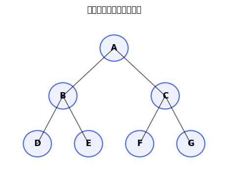
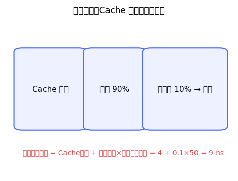

💻 408 选择题 5 题
▶二叉树的根结点为 A，A 的左、右孩子分别为 B、C；B 的左、右孩子分别为 D、E；C 的左、右孩子分别为 F、G。按左子树—根—右子树的后序遍历规则，遍历序列是：数据结构简单
A. D、E、B、F、G、C、A
B. A、B、D、E、C、F、G
C. D、B、E、A、F、C、G
D. A、C、F、G、B、D、E

答案：A
📖 解析：后序遍历顺序是左子树、右子树、根。A 的左子树先得到 D、E、B，右子树得到 F、G、C，最后访问根 A，因此序列为 D、E、B、F、G、C、A。
▶某计算机 Cache 访问时间为 4 ns，Cache 命中率为 90%，未命中时还需访问主存，主存访问时间为 50 ns（忽略其他开销）。一次访存的平均访问时间为：计算机组成原理简单
A. 4 ns
B. 5 ns
C. 9 ns
D. 54 ns

答案：C
📖 解析：每次访问都先查 Cache，耗时 4 ns；10% 的访问未命中，还需额外访问主存 50 ns。因此平均访问时间为 4+（1−0.9）×50=9 ns。这里的主存时间是未命中后的额外时间，不应把命中和未命中简单地都乘以完整路径时间。
▶读者—写者问题采用读者优先算法：读者进入时用 mutex 保护 read_count；第一个读者执行 P(rw)，最后一个读者执行 V(rw)；写者只执行 P(rw)、写操作、V(rw)。下列说法正确的是：操作系统困难
A. 写者可能因不断到来的读者而长期等待，发生写者饥饿
B. 任意时刻最多只能有一个读者进入临界区
C. 每个读者都必须执行一次 P(rw)，才能开始读
D. 写者修改 read_count 时必须先获得 mutex，否则读者不能并发
答案：A
📖 解析：读者优先算法只在第一个读者到来时占用 rw，后续读者可继续进入，因此多个读者可以并发读；只有最后一个读者释放 rw。若读者持续到来，read_count 始终不为 0，等待中的写者可能长期得不到 rw，产生写者饥饿。mutex 只用于保护 read_count，不是写者修改它，因为写者不修改该变量。
▶内网主机 192.168.1.10:5000 访问 Internet 服务器 203.0.113.8:443。家用路由器的公网地址为 198.51.100.2，并为该连接分配公网端口 62001。NAT 建立映射后，发往 Internet 的报文源地址和源端口应为：计算机网络中等
A. 192.168.1.10:5000
B. 198.51.100.2:5000
C. 192.168.1.10:62001
D. 198.51.100.2:62001
答案：D
📖 解析：源 NAT 会把私有源地址和源端口改写为路由器的公网地址及其分配的公网端口，所以外发报文的源端点是 198.51.100.2:62001。路由器内部保存映射 198.51.100.2:62001↔192.168.1.10:5000，收到返回报文后再反向改写。
▶对下图所示二叉树进行层序遍历。层序遍历从根开始，按从上到下、从左到右访问结点，其结果是：数据结构简单
A. A、B、C、D、E、F、G
B. A、B、D、E、C、F、G
C. D、E、B、F、G、C、A
D. A、C、B、F、G、D、E

答案：A
📖 解析：层序遍历使用队列：先访问 A，再将 B、C 入队；随后访问 B 并加入 D、E，再访问 C 并加入 F、G；最后依次访问 D、E、F、G。因此结果为 A、B、C、D、E、F、G。